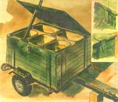

Putting Trash In Its Place
February/March 1992
By Carl F. Kirkpatrick
This smart-designed recycling/separation shed/trailer solves all your sorting and storage troubles!
FOR YEARS I ATTEMPTED TO MAIN-tain a neatish yard-one without rubbish barrels being my homestead's most-prominent visual feature. When I kept the barrels outside, lined up along the side of the garage, they were susceptible to critters of all sorts, wild and domestic. When inside, they took up a good deal of my workshop and invited a flow of traffic into my workspace: rubbish man, tenants, friends, and relatives. My invention of this recycling/separation shed cured all my problems, and putting it together was a fun weekend project to boot.
My shed is basically a light trailer designed and modified to store household rubbish barrels neatly and to easily transport their separated contents to the recycling center. Its specialized design holds several trash barrels, covers them with a single lid, and conceals them from view.
Sure, it's got all the visual charm of a pumphouse, but its virtues are readily apparent. It saves time in not having to load and unload the barrels; it also saves money (my trailer is 15 years old-how much do you pay for rubbish removal service in a year?).
But that's just the beginning. The trailer saves garage space; it saves the yard's appearance (mine is neatly painted and parked behind the bushes); it saves one from having to retrieve windblown cans and lids or being awoken in the middle of the night by them; and it keeps away flies, mice, rats, dogs, raccoons, and other pests.
Making the Recycling/Separation Shed
Start with a trailer-new, used, large, or small. Draw a floor plan of it on graph paper (do this first, to see if it will suit your situation). Next, find what's readily available in barrel sizes. I like to buy the "indestructible" type: They may be expensive for five or six, but they're strong, quiet, won't dent or rust, and will last forever in their protective enclosure. Measure them at the top and see how many will fit into your trailer (cut off the molded handles if they're in the way).
When that's resolved, note the height of the barrels-without the covers-and make that the height of the trailer sides. This is one of the keys for the success of this project, and what makes it different from the ordinary rubbish trailer: It seals the tops of the barrels and provides support for the plywood lid so it doesn't droop in the middle and collect rainwater.
Label the containers on the graph-paper plan, including all the separating requirements, and keep in mind the order that the bins are in at the recycling center so you can drive through smoothly. Also consider which side of the trailer you want to open, for your convenience at home or at the recycling center.
The 40" X 48" trash-separation
trailer (left) is made from inexpensive materials.
The five bins hold trash, bottles/plastic, scrap,
metal, cans, and newspapers.
You can build on any ordinary trailer frame by putting down a ¾” exterior-plywood floor, then tongue and groove board sides with stakes to fit the pockets on the trailer frame. The 5' 8" exterior-plywood top overhangs all around ¾” beyond the sides. A padlock hasp makes a good latch to keep the top secure in winds and during traveling. A bolt-snap is easy to use instead of a padlock, and is only necessary for travel. To hold the top open when using, I've always kept a short 2 x 3 inside to prop it open. (I've never had a problem with this method, but be careful in high or gusty winds with the lid open.)
Because this trailer spends its time outdoors, it does need two coats of good-quality oil-base porch & deck enamel. There's no need to paint the interior, but do paint the underside of the top-it will stay flat and last longer. Paint it the color of your buildings, camouflage it, or paint the name of your farm or business on it. Whatever you do, remember you'll have to look at it for years.
The flat top does not collect water, never being quite on the level enough to do so. My trailer has a folding leg, but you can use a box to keep it nearly level when it's parked. I mow the grass around it, then park it in a slightly different spot each time so I can mow where it was before. The lawn never seems to show any wear and tear because of it. Same in winter-snow gets cleared from around it, but no special fussing is needed. It's a lot easier than having to clear around a row of trash barrels.
When we had tenants living in our apartment, the understanding was that I'd haul their trash for free as long as they complied with the town's separation rules. This worked very well, and this trailer arrangement (with six barrels) stored a week's trash for two families. Now that we no longer have tenants, trips to the recycling center are two weeks apart or more.
The only negative thing about the trailer is getting used to backing up with it hitched on the car or truck. This is the worst case scenario in trailerland-having a real short trailer on a long wheelbase vehicle (just the opposite of how a trailer truck is set up). The first rule is to avoid getting into backing-up situations whenever you can. Second is when you do have to back up, do it very slowly. Take your time, stop immediately when it's not going where you want it to, and practice to improve your skills.
And don't be surprised by an occasional compliment. The advantages of this setup are appreciated by the most perceptive...after a moment or two of hard scrutiny.
 This trailer has been in service for more than 15 years. Not exactly a pretty sight,but it's far better than a row of trash cans and takes up no valuable workshop space. |
 The shed is secured with a boltsnap (top insert) and a padlock hasp that flips out of the way when open. The cleats (bottom insert) are tapered to encourage water runoff. An outside-mounted hinge allows the lid to open completely. |
|